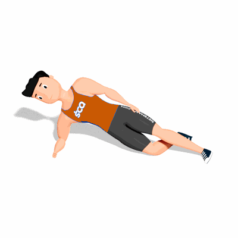

Prancha Lateral com Apoio do Joelho

O exercício irá trabalhar a estabilidade da lombar e o fortalecimento dos músculos oblíquos, que ficam localizados na parte lateral da barriga. Essa variação da mais facilidade para manter a posição correta do movimento, sendo bastante indicada para iniciantes.
Ficha Técnica
Tipo: Funcional
Grupo Muscular: Abdome
Aparelho: Nenhum
Músculos: Nenhum
Como realizar
- Deite-se do lado direito e apoie o antebraço sobre no solo. O cotovelo do seu braço direito deverá estar diretamente abaixo do seu ombro;
- Flexione o joelho da perna direita para atrás e apoie ela no chão;
- Estenda a perna esquerda e apoie o pé no chão, mantenha cabeça e coluna alinhadas;
- Realize a contração dos músculos abdominais;
- Em seguida, levante os quadris do solo enquanto expira. Mantenha a posição;
- Logo após as respirações, inspire e retorne à posição inicial;
- Mude de lado e repita.
 RC STORE
RC STORE